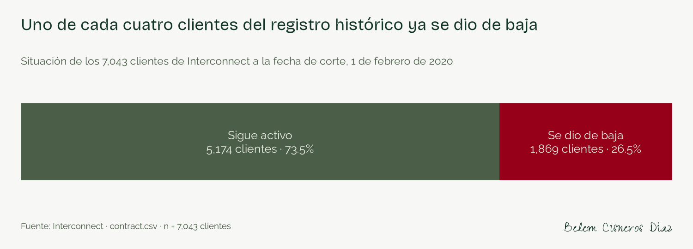
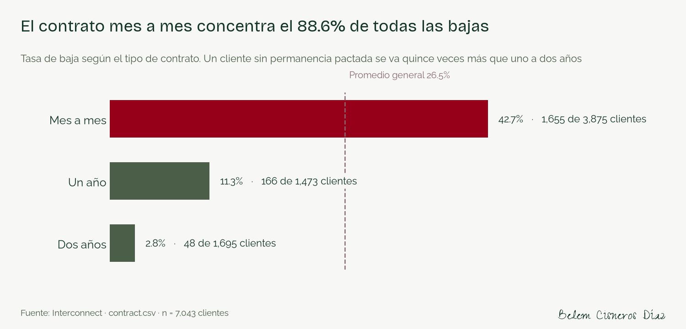
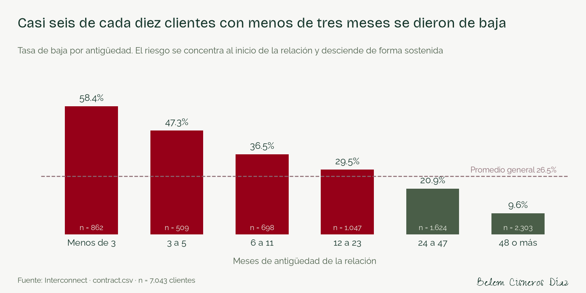
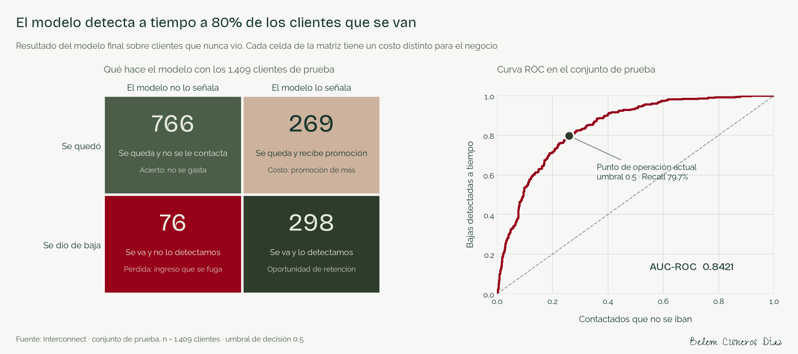
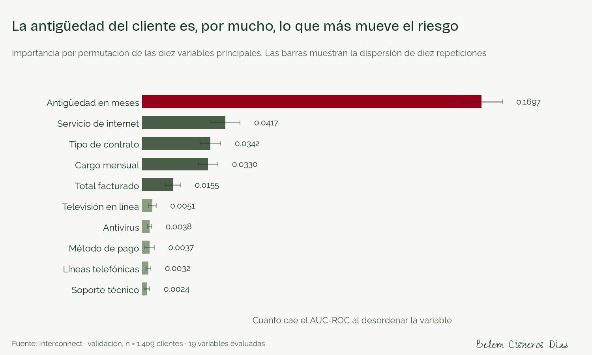
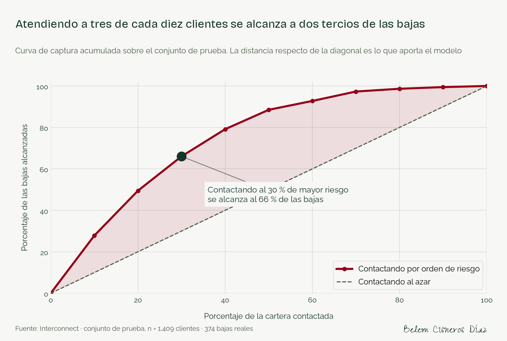
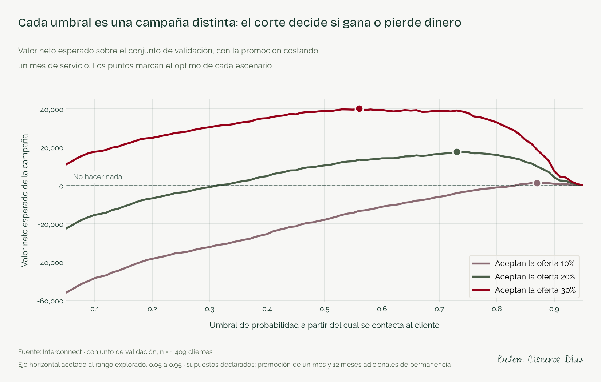

Interconnect no sabía a quién ofrecerle una promoción. Construí un modelo que ordena a sus clientes por riesgo de cancelación y calcula a cuántos conviene contactar para que la campaña gane dinero en lugar de perderlo.
Interconnect es un operador de telecomunicaciones que pierde clientes a un ritmo creciente. Su equipo de marketing sabe que retener cuesta mucho menos que adquirir, y quiere adelantarse: ofrecer una promoción a quien está por cancelar, antes de que cancele. El problema es que no sabe a quién.
De los 7,043 clientes del registro histórico, 1,869 terminaron dándose de baja: el 26.5%. Esos clientes facturaban 139,130.85 al mes, el 30.5% de los 456,116.60 que suman los cargos mensuales de todo el registro.
Casi un tercio de la facturación registrada correspondía a clientes que terminaron yéndose.
La alternativa que Interconnect tiene hoy —ofrecer promociones sin criterio— produce pérdida en siete de los nueve escenarios que evalué, con cifras que llegan a −177,136. No saber a quién dirigir la oferta no es neutral: cuesta dinero.

Los datos llegan en cuatro archivos que describen al mismo cliente desde ángulos distintos: contrato, datos demográficos, servicios de internet y servicios telefónicos. Comparten la columna customerID, y lo primero que verifiqué es que no se repite en ninguno: si se repitiera, la unión multiplicaría filas y todo conteo de clientes dejaría de ser confiable.
Como Interconnect vende internet y telefonía por separado, la unión genera celdas vacías: 1,526 clientes sin internet y 682 sin línea telefónica. Esos vacíos no son un error de captura, significan que el cliente no contrató el servicio, y los codifiqué con una categoría que lo dice con todas sus letras en lugar de imputarlos.
La decisión más delicada del proyecto. No existe una columna que diga si el cliente se fue: hay que construirla desde la fecha de término del contrato. Esa misma fecha sirve para calcular la antigüedad de quien canceló. La uso para ambas cosas y acto seguido la elimino, porque un cliente real sobre el que hay que decidir hoy no viene con fecha de término escrita. El análisis comprueba de forma explícita que no sobrevive ninguna columna derivada de ella.
En lugar de describir las variables una por una, las ordené por cuánto separan a los dos grupos. Eso dice de entrada cuáles van a cargar el peso del modelo y cuáles no aportan nada.
| Señal | Tasa de baja | Contra |
|---|---|---|
| Contrato mes a mes | 42.7% | 2.8% del contrato a dos años |
| Menos de tres meses de antigüedad | 58.4% | 9.6% de quienes llevan cuatro años o más |
| Pago con cheque electrónico | 45.3% | 15.2% de quienes pagan con tarjeta |
| Fibra óptica | 41.9% | 19.0% de DSL |
El contrato mes a mes concentra por sí solo el 88.5% de todas las cancelaciones. Y hay un resultado que importa tanto como los anteriores: el género separa 0.8 puntos y tener línea telefónica, 1.8. Están en los datos y no informan nada. También eso se reporta.


Entrené un modelo constante como piso de comparación y tres modelos reales de familias distintas. El más simple ganó, y al optimizarlos los tres quedaron empatados dentro del margen de error.
| Modelo | AUC-ROC en validación | Recall |
|---|---|---|
| Regresión logística · baseline | 0.8356 | 0.5749 |
| Regresión logística · optimizada | 0.8356 | 0.5749 |
| Regresión logística · optimizada con ajuste de pesos | 0.8354 | 0.8075 |
| Bosque aleatorio · optimizado | 0.8365 | 0.7968 |
| LightGBM · optimizado | 0.8374 | 0.8021 |
La diferencia entre el mejor modelo de árboles y la regresión logística es de 0.0020, mientras que la variabilidad que produce el propio método de medición es de 0.0163: ocho veces mayor. Es un empate técnico. Elegí el modelo lineal porque tiene el mejor Recall de los cinco candidatos, porque sus coeficientes se pueden leer y porque entrena en segundos. Cuando dos modelos empatan dentro del margen de error, elegir el complejo por un decimal es confundir ruido con desempeño.
El conjunto de prueba se abrió una sola vez, con el modelo ya decidido, sobre 1,409 clientes que nunca había visto.
AUC-ROC 0.8421 · Recall 0.7968 · Precisión 0.5256. De cada 100 clientes que cancelan, el modelo identifica 80 a tiempo.

Un detalle que mejora el resultado: las cancelaciones que el modelo no detecta facturaban en promedio 66.91 mensuales frente a 75.50 de las que sí detecta. Son clientes de menor valor, así que el modelo alcanza el 81.6% del ingreso en fuga, por encima del 79.7% de los clientes.

Un modelo no es un entregable: es un insumo para decidir. Estas son las tres preguntas que el área comercial necesita responder antes de aprobar un presupuesto.
¿A cuántos hay que contactar? No hace falta la cartera entera. Ordenando a los clientes por riesgo, atender al 30% alcanza al 66% de quienes se van. Contactando a ese mismo porcentaje sin criterio solo se encontraría al 30%.

¿Dónde cortar la lista? El umbral de decisión no es una preferencia técnica: decide si la campaña gana o pierde dinero. Lo elegí sobre el conjunto de validación maximizando el valor neto esperado, bajo supuestos que declaro —tasa de aceptación, costo de la promoción y meses adicionales de permanencia— porque Interconnect no proporciona esos datos.

En el escenario intermedio —una de cada cinco personas acepta la oferta, la promoción cuesta un mes de servicio— el umbral óptimo es 0.73. Aplicado al conjunto de prueba contacta a 310 de 1,409 clientes, detecta 202 de las 374 cancelaciones y deja un valor neto de 15,216.
Ofrecer la promoción a toda la cartera, en ese mismo escenario, deja -37,716. La diferencia entre decidir con el modelo y decidir sin él es de 52,932.
¿Y si no conviene? En el escenario más adverso que evalué —solo una de cada diez acepta y la promoción cuesta dos meses— ningún umbral produce valor positivo, y la recomendación es no lanzar la campaña. Un sistema que solo sabe decir «contacte a estos» no sirve para decidir un presupuesto; este también dice cuándo no vale la pena gastar.
| Segmento | Evidencia | Acción propuesta |
|---|---|---|
| Contrato mes a mes | 42.7% de baja · 88.5% de las cancelaciones | Incentivo de migración a contrato anual con meses bonificados |
| Menos de tres meses | 58.4% de baja | Programa de bienvenida con contacto en el primer y segundo mes |
| Cheque electrónico | 45.3% de baja | Migración a domiciliación con un beneficio asociado |
| Fibra óptica | 41.9% de baja | Empaquetar soporte técnico o antivirus antes de descontar |
| Decisión | Propuesta |
|---|---|
| Frecuencia de cálculo | Mensual, con el cierre de facturación |
| Umbral inicial | 0.73, recalibrable en cuanto el piloto entregue la aceptación real |
| Piloto con grupo de control | Dividir la lista de riesgo en dos mitades al azar; una recibe la oferta y la otra no |
| Métricas de seguimiento | Tasa de baja por grupo, aceptación, costo por cliente retenido, valor neto efectivo |
| Reentrenamiento | Cuando el AUC-ROC sobre datos nuevos caiga de 0.80, o cada seis meses |
El grupo de control no es un detalle metodológico. Es lo que separa «retuvimos al 70 % de los contactados» de «retuvimos al 70 %, pero el 65 % se habría quedado de todos modos». Sin él, cualquier cifra de éxito es inverificable.
Lo que este trabajo no resuelve:
Las cifras de mercado que enmarcan este trabajo provienen de fuentes verificadas, con enlace y fecha:
Una advertencia de lectura: el 1 % que reportan los grandes operadores es churn mensual, mientras que el 26.5 % de este registro es acumulado sobre toda la historia del archivo. No son cifras comparables entre sí.
El análisis completo, con el código y las salidas de cada paso, está en el repositorio del proyecto.